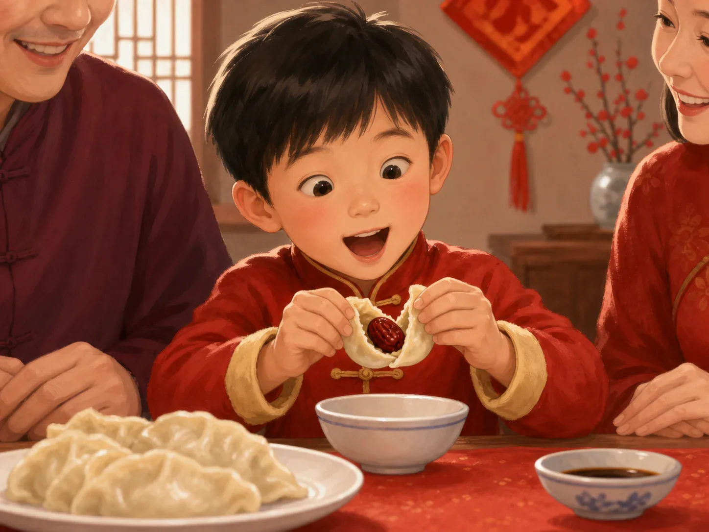
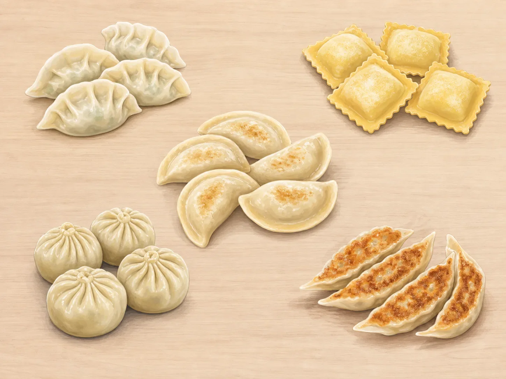

饺子的故事
The Story of Dumplings
Page 1
糟糕，饺子皮破了！
Oh No—The Wrapper Split!

A family makes dumplings together. One person rolls wrappers, another adds filling, and someone carefully seals the edges.
锅里的水咕嘟咕嘟冒着泡。一只饺子翻了个身，饺子皮突然裂开，绿色的菜馅漏进了水里。
“为什么别人包的都好好的，只有我的露馅了？”孩子捞起下一只，仔细检查。也许馅放得太多，把皮撑开了；也许皮边沾了水，粘不牢；也许只是有一个小角没有捏紧。
这一次，孩子少放一点馅，再把边从中间向两边紧紧按好。饺子滑进锅里，煮到浮了起来。这一只没有破，孩子终于笑了。
The water bubbles in the pot. One dumpling flips over, its wrapper splits, and the green filling leaks into the water.
“How come everyone else's dumplings stay closed, but mine always leak?” A child picks up the next wrapper and looks closely. Maybe there was too much filling. Maybe the edge got wet and would not stick. Or perhaps one tiny corner was never pressed shut.
This time, the child uses a little less filling and seals the edge carefully from the middle to both ends. Into the pot it goes. It cooks until it floats to the top. This one stays closed, and the child finally smiles.
Page 2
谁包了第一只饺子？
Who Made the First Dumpling?
People often tell a winter tale about Zhang Zhongjing making jiao'er, and this scene shows that legend.
这个问题没有一个确定答案。考古学家在中国西北部干燥的古墓里，找到过一千多年前的弯月形面食。它们看起来很像今天的饺子，说明那时已经有人把面皮和馅放在一起了。不过，它们不能告诉我们世界上的第一只饺子是谁包的。
还有一个流传很广的冬天故事。故事说，古代医生张仲景看见人们在寒风里受冻，便把肉和其他材料包进耳朵形的面皮，煮成热食送给大家。后来的故事把这种食物叫作“娇耳”——“娇”是娇嫩的娇，“耳”是耳朵的耳。
张仲景是真实人物，“娇耳”的故事却是很久以后才出现的传说。它不能证明张仲景做出了第一只饺子，不过人们至今仍会在讲冬至饺子时说起它。
No one knows for sure. Archaeologists—people who study things from long ago—have found little moon-shaped foods in dry tombs in northwestern China. They are more than one thousand years old and look a lot like modern dumplings. But they cannot tell us who made the very first one.
There is also a well-loved winter tale. It says that an ancient doctor named Zhang Zhongjing saw people shivering in the cold. He wrapped meat and other ingredients in ear-shaped pieces of dough, cooked them, and shared the hot food. Later versions call this food jiao'er, written 娇耳, a name connected to its ear-like shape.
Zhang Zhongjing was a real person, but the jiao'er story appeared much later. It does not prove that he made the first dumpling. People still tell it today when they talk about eating dumplings at the Winter Solstice.
Page 3
一只味道不同的幸运饺子
A Lucky Dumpling with a Different Flavor

The red date in the picture represents a traditional New Year surprise. Soft red-date paste is easier to use in a child's dumpling.
在中国北方的许多家庭，饺子会在春节上桌。弯弯的饺子让一些人想到古代的金银元宝，所以一盘饺子也带着“新年富足”的祝福。不过，并不是所有中国家庭过年都吃饺子。有人吃年糕、汤圆、鱼，或者自己家乡最熟悉的菜。
有些家庭还会包几只馅料特别的“幸运饺子”。一点糖代表新的一年甜甜蜜蜜；柔软的红枣泥祝愿好事早早来到；磨碎的花生馅则带着长寿的祝福。也有的家庭会挑一种全家人都喜欢的馅料，再送给它一个自己的祝福。
In many northern Chinese families, dumplings are served for Lunar New Year. Their curved shape reminds some people of old pieces of gold and silver, so a plate of dumplings can carry a wish for plenty in the coming year. But not every Chinese family eats dumplings for the holiday. Some serve rice cakes, sweet rice balls, fish, or a favorite dish from their own hometown.
Some families also make a few “lucky dumplings” with special fillings. A little sugar stands for a sweet year. Soft red-date paste can stand for good things arriving soon, while ground peanut filling can stand for long life. Other families choose a filling everyone likes and give it a wish of their own.
Page 4
世界各地的包馅面食
Dumplings Around the World

Filled dough foods appear around the world. They may look like cousins, but they have different names, flavors, and stories.
把馅包进面皮里，是一个很受欢迎的办法。中国有饺子和馄饨，韩国有 mandu，日本有 gyoza，意大利有 ravioli，波兰有 pierogi。它们可能是弯月形、方形或圆形；有的煮，有的蒸，还有的煎得底面金黄。
这些食物为什么有点像？食谱会跟着商人、旅行者和搬家的人走到远方，所以有些做法可能互相影响。住在不同地方的人，也可能各自想出了把馅包进面皮的办法。
研究食物历史的人还不知道这些面食是不是全都有关系。只凭相似的形状，不能证明它们来自同一个最早的食谱。中国的水饺、韩国的 mandu 和意大利的 ravioli 都有自己的名字、馅料和做法，并不是同一道食物。
Wrapping filling inside dough is a useful idea, and cooks around the world have used it in many ways. China has jiāozǐ · 交子 · An early paper currency used in Sichuan and later issued by the Northern Song government. and wontons. Korea has mandu, Japan has gyoza, Italy has ravioli, and Poland has pierogi. Some are curved, some square, and some round. They may be boiled, steamed, or fried until golden underneath.
Why do some of them look alike? Recipes travel with traders, neighbors, and families moving to new homes, so some foods may have influenced others. People in faraway places may also have come up with similar ways to wrap filling in dough.
People who study food history still do not know whether all these foods are connected. A similar shape alone does not prove that they came from one first recipe. Chinese jiaozi, Korean mandu, and Italian ravioli each have their own names, fillings, and ways of being made. They are not all the same food.